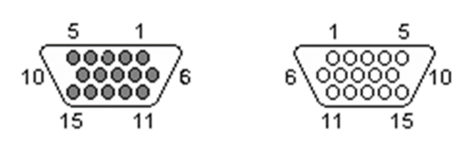
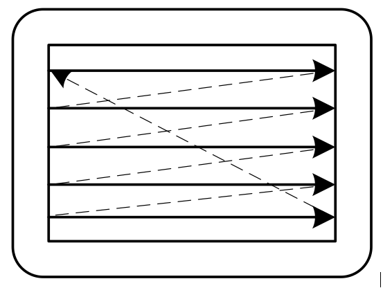
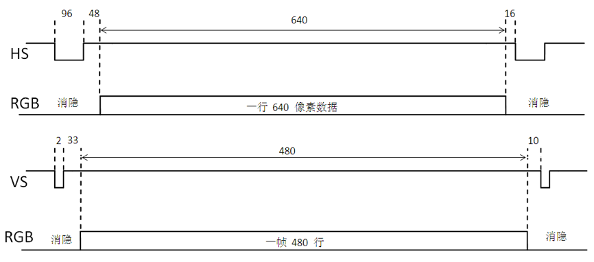
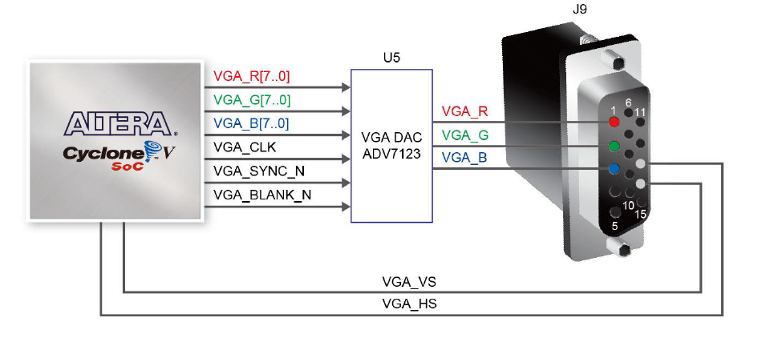
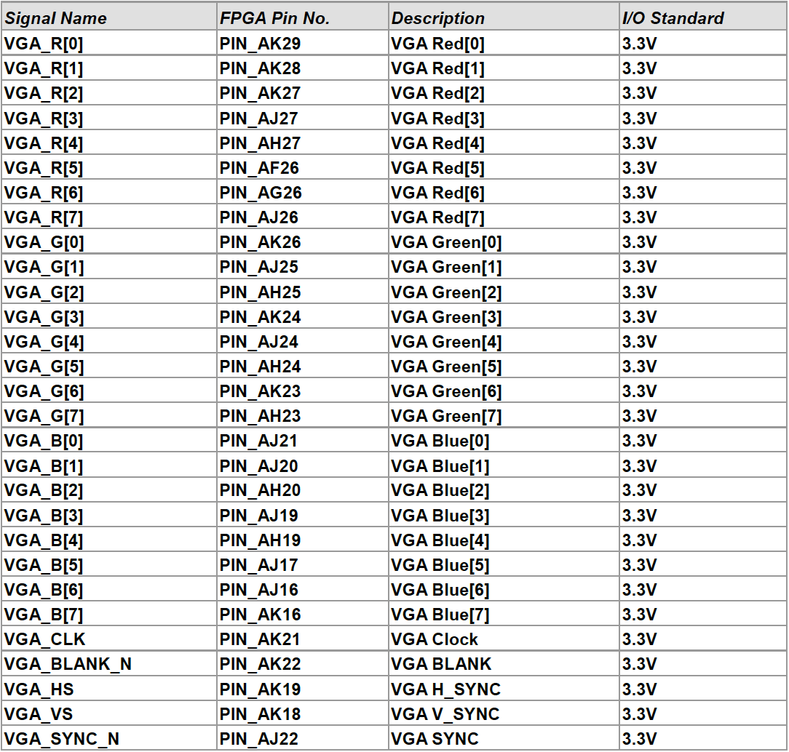

Lab 8: VGA interface controller’s implementation
About twenty bottles of paint were neatly arranged in a row on the table. Seurat picked up the smallest paintbrush Vincent had ever seen, dipped the tip into one of the bottles of paint, and began to apply dots of color to the canvas with mathematical precision. He worked calmly and emotionlessly, dotting, dotting, dotting. He held the brush straight, dipping it briefly into the paint bottle before dotting it onto the canvas, creating hundreds of tiny color dots.
— Lust for Life: The Life of Vincent van Gogh, by Irving Stone
The VGA interface is a video data transmission standard established by IBM and is the most typical interface for computer monitors. The purpose of this experiment is to learn the principles of the VGA interface and the design methods for VGA interface controllers.
VGA Overview
VGA interface appearance and pin functions
VGA (Video Graphics Array) interface was originally designed to connect CRT monitors. Due to design and manufacturing limitations, CRT monitors could only accept analog signal inputs, which required graphics cards to output analog signals. For more information on the differences between analog and digital signals, please refer to Analog Signal and Digital Signal. The VGA interface is the port on the graphics card that outputs analog signals. In traditional CRT monitors, VGA interfaces were universally used, and many LCD monitors or projectors still support VGA ports today. The VGA interface is a 15-pin/hole trapezoidal connector, divided into three rows of five pins each, as shown in Figure fig-vga01:

Fig. 62 Schematic diagram of VGA interface shape
The VGA interface primarily consists of five signal lines: R, G, B, HS, and VS, which correspond to red, green, blue, horizontal synchronization, and vertical synchronization (also known as line synchronization and frame synchronization).
VGA working principle
Images are displayed in pixels (dots). The resolution of a display refers to the number of pixels per line on the screen and the number of lines per frame. The standard VGA resolution is \(640\times 480\), and there are higher resolutions such as \(1024\times 768\), \(1280\times 1024\), and \(1920\times 1200\). Considering the visual effect on the human eye, the screen refresh rate (the number of frames displayed per second) should be greater than 24 to prevent the screen from flickering. The typical refresh rate for a VGA monitor is 60 Hz.
Each frame of the image is displayed starting from the upper-left corner of the screen, one line at a time. The horizontal sync signal is a negative pulse. After the horizontal sync signal becomes active, the RGB terminal sends the RGB voltage values for each pixel point in the current line. When a frame is finished displaying, the frame sync signal sends a negative pulse, and the next frame begins displaying from the top-left corner of the screen, as shown in Figure fig-vga02.

Fig. 63 Display scan diagram
The RGB port does not continuously transmit pixel information at all times. This is because the electron beam of a CRT requires time to move from the end of the previous line to the start of the next line, and also needs time to return from the bottom-right corner of the screen to the top-left corner to begin the next frame. During these periods, the voltage values sent by the RGB port are 0 (black). These time intervals are referred to as the electron beam’s horizontal blanking time and vertical blanking time. Horizontal blanking time is measured in pixels, while vertical blanking time is measured in lines. The VGA line scan and field scan timing diagram is shown in Figure fig-vga03:

Fig. 64 VGA line scan and field scan timing diagram
As shown in Figure fig-vga03, effectively displaying a line of signals on a standard \(640\times 480\) VGA requires 96+48+640+16=800 pixel display times, where the line synchronization negative pulse width is 96 pixel display times, the line blanking trailing edge requires 48 pixel display times, then 640 pixels are displayed per line, and finally the line blanking leading edge requires 16 pixel display times. Therefore, the time required to display pixels in a line is 640 pixel display times, and the line blanking time is 160 pixel display times.
On a standard \(640\times 480\) VGA, it takes 2+33+480+10=525 line display times to effectively display a frame of images, where the field synchronization negative pulse width is 2 line display times, the field blanking trailing edge requires 33 line display times, then 480 lines are displayed per field, the field blanking leading edge requires 10 line display times, the display time for one frame is 525 line display times, and the blanking time for one frame is 45 line display times.
Therefore, an image on a \(640\times 480\) VGA requires \(525\times 800=420k\) pixel display time. Scanning 60 frames per second requires a total of approximately 25M pixel display time.
Implementation of VGA display
VGA interface on the DE10-Standard development board
The DE10-Standard development board uses an ADV7123 VGA DAC chip to implement VGA functionality. This chip converts the FPGA digital signal to VGA analog signal. The specific connection method is shown in Figure fig-vga04.

Fig. 65 DE10-Standard VGA connection diagram
The interface pins between the development board and the ADV7123 chip include three sets of 8-bit color signals: VGA_R[7:0], VGA_G[7:0], VGA_B[7:0], horizontal sync signal VGA_HS, vertical sync signal VGA_VS, VGA clock signal VGA_CLK, VGA sync (low active) VGA_SYNC_N, and VGA blanking signal (low active) VGA_BLANK_N. As shown in Figure fig-vga05.

Fig. 66 VGA pins on the DE10 Standard development board
The VGA signal first needs a clock drive. Here, we use a 25MHz clock to drive VGA_CLK. Each clock cycle scans one pixel, so at a resolution of \(640\times 480\), we need \(800\times 525=420,000\) clock cycles to scan a frame (the blanking time is taken into account here). At a clock cycle of 25MHz, the total duration is 16.8 milliseconds, which corresponds to approximately 60 frames per second.
We use a simple divider to generate the required VGA_CLK from a 50MHz clock.
module clkgen(
input clkin,
input rst,
input clken,
output reg clkout
);
parameter clk_freq=1000;
parameter countlimit=50000000/2/clk_freq; // Automatically calculate the number of counts
reg[31:0] clkcount;
always @ (posedge clkin)
if(rst)
begin
clkcount=0;
clkout=1'b0;
end
else
begin
if(clken)
begin
clkcount=clkcount+1;
if(clkcount>=countlimit)
begin
clkcount=32'd0;
clkout=~clkout;
end
else
clkout=clkout;
end
else
begin
clkcount=clkcount;
clkout=clkout;
end
end
endmodule
This generator can generate clocks of different frequencies based on the parameters specified when it is called:
clkgen #(25000000) my_vgaclk(CLOCK_50,SW[0],1'b1,VGA_CLK);
Under the drive of this clock, we need to generate various drive signals. Among them, the VGA synchronization signal VGA_SYNC_N can be set to zero for a long time. Other signals can be implemented by referring to table list-vga01.
module vga_ctrl(
input pclk, // 25MHz clock
input reset, // set
input [23:0] vga_data, // VGA color data provided by the upper module
output [9:0] h_addr, // current scan pixel coordinates provided to the upper module
output [9:0] v_addr,
output hsync, // horizontal sync and vertical sync signals
output vsync,
output valid, // blanking signal
output [7:0] vga_r, // RGB color signal
output [7:0] vga_g,
output [7:0] vga_b
);
// VGA parameter settings at 640x480 resolution
parameter h_frontporch = 96;
parameter h_active = 144;
parameter h_backporch = 784;
parameter h_total = 800;
parameter v_frontporch = 2;
parameter v_active = 35;
parameter v_backporch = 515;
parameter v_total = 525;
// pixel count value
reg [9:0] x_cnt;
reg [9:0] y_cnt;
wire h_valid;
wire v_valid;
always @(posedge reset or posedge pclk) // horizontal pixel counting
if (reset == 1'b1)
x_cnt <= 1;
else
begin
if (x_cnt == h_total)
x_cnt <= 1;
else
x_cnt <= x_cnt + 10'd1;
end
always @(posedge pclk) // vertical pixel counting
if (reset == 1'b1)
y_cnt <= 1;
else
begin
if (y_cnt == v_total & x_cnt == h_total)
y_cnt <= 1;
else if (x_cnt == h_total)
y_cnt <= y_cnt + 10'd1;
end
// generate synchronization signals
assign hsync = (x_cnt > h_frontporch);
assign vsync = (y_cnt > v_frontporch);
// generate blanking signals
assign h_valid = (x_cnt > h_active) & (x_cnt <= h_backporch);
assign v_valid = (y_cnt > v_active) & (y_cnt <= v_backporch);
assign valid = h_valid & v_valid;
// calculate the current effective pixel coordinates
assign h_addr = h_valid ? (x_cnt - 10'd145) : {10{1'b0}};
assign v_addr = v_valid ? (y_cnt - 10'd36) : {10{1'b0}};
// set the output color values
assign vga_r = vga_data[23:16];
assign vga_g = vga_data[15:8];
assign vga_b = vga_data[7:0];
endmodule
This code provides VGA control signals externally. By counting the clock, it determines which pixel on which line is currently being scanned and whether to blank the screen. The code outputs the three colors red (R), green (G), and blue (B) represented by the 8-bit binary signals vga_r, vga_g, and vga_b, respectively. These three sets of 8-bit digital signals are transmitted to the analog-to-digital converter on the development board, converted into analog signals, and sent to the display via the VGA interface.
A key feature of this controller is its ability to facilitate control of the display content by the upper-level system. For example, if vga_data is set to the constant 24’hFF0000 when the module is called, the entire screen will be displayed in red. The upper-level system can also select appropriate colors based on the current pixel coordinates and set different vga_data values for different pixels. More importantly, the upper-level system can allocate a display memory, use v_addr and h_addr to index this display memory, and set vga_data according to the value in the display memory each time a specific pixel point is scanned. This way, other applications can directly operate on the display memory, and changes to the display memory are automatically reflected on the VGA display without needing to concern themselves with the specific scanning process of the VGA.
Unfortunately, if each pixel is represented by three 8-bit numbers, a single pixel requires 24 bits, and a \(640\times 480\) pixels requires 7.372M bits of RAM. Our FPGA only has 5.57M bits of on-chip memory, which is insufficient to implement 24-bit color VGA memory. Possible solutions include
Reducing the color resolution to 12 bits, with each RGB component represented by 4 bits, resulting in fewer color options ( recommended solution )
Allocating memory only for the \(256×256\) pixel range
Accessing external 64M SDRAM (this solution is too complex and not recommended)
Lab check-in contents
On-Board Lab: Display images
Use the above controller to display a static image on the monitor. Please convert the image format to a mif file yourself.
Low-bit color display scheme
We recommend using a low-bit color display method to work around the RAM shortage issue. Of course, interested students can use other methods to achieve high-resolution image display.
The video memory allocation size is \(640\times 512\) words, with each word being 12 bits. The 19-bit address is formed by combining the full 10 bits of h_addr and the lower 9 bits of v_addr to index the video memory. To simplify addressing, we have allocated 512 rows of space for the row v_addr. This way, there is no need for complex address conversion. Here, only 327,680 consecutive storage units need to be allocated, without considering cases where h_addr exceeds 640.
When assigning red, green, and blue colors, set the upper 4 bits of the 8-bit output data based on the 4-bit value corresponding to the color in the 12-bit video memory data, and set the lower 4 bits to zero.
Initialize the video memory using a .mif file. You can generate the .mif file using a common scripting language. We also provide a \(640×512\) 12-bit image file named my_picture.mif, where each pixel is represented by 4 bits for RGB, and the addresses are arranged by column. The first column contains 512 pixels, with pixels above row 480 set to white. The remaining 640 columns are then arranged sequentially.
Implementation of video memory
The video memory occupies a large amount of space, so clock edge-driven video memory is required for implementation. This allows the system to use BLOCK RAM (M10K) for implementation. When resources are insufficient, Quartus may fail to synthesize and spend a lot of time compiling.
Implementing elastic collision effects for images
Display an image moving across the screen at a specific speed. The image itself is much smaller than the display resolution, for example, \(100 \times 100\) pixels. The image moves within the screen in a specific direction at a random speed (the x-direction and y-direction speeds can be different) in sync with the clock. When the image’s boundary touches the screen boundary, it changes its direction of movement using an elastic collision mechanism. The final effect is similar to a pinball game, with the image continuously bouncing within the screen.
Online test - Deterministic Finite-State Automata
Sign-in questions